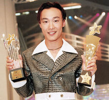
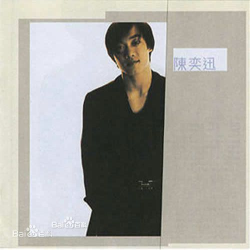
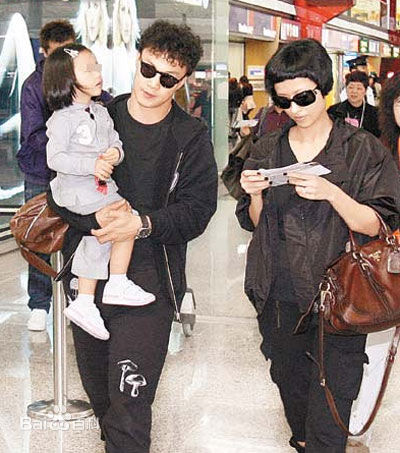

华星时期 1995年，陈奕迅参加TVB举办的第14届新秀歌唱大赛，并获得冠军。1996年，发行首张个人首张粤语专辑《陈奕迅》。。。 英皇时期 2000年，加入英皇娱乐旗下的Music Plus唱片公司。。。。。 
中文名 陈奕迅 外文名 Eason Chan 别 名 医生，吹神，E臣，陈小胖，所长 国 籍 中国 民 族 汉族 星 座 狮子座 血 型 O型 身 高 173cm 体 重 72kg 出生地 香港 出生日期 1974年7月27日 职 业 歌手、演员 毕业院校 英国金斯顿大学 经纪公司 陈家瑛经理人公司 代表作品 婚礼的祝福、K歌之王、单车、你的背包、十年、浮夸、富士山下、爱情转移、好久不见、淘汰 主要成就 十大劲歌金曲最受欢迎男歌星 十大中文金曲全国最佳男歌手 新城国语力颁奖礼至尊歌手大奖 全球华语歌曲排行榜最佳男歌手 CCTV-MTV音乐盛典最受欢迎男歌手 展开 配 偶 徐濠萦[11] 语 言 粤语、英语、国语、闽南语 祖 籍 广东省东莞市 唱片公司 新艺宝唱片 音乐制作公司 EAS MUSI
陈奕迅的父亲陈裘大祖籍广东东莞，是高级公务员，担任过中国香港房屋署屋宇装备总工程师。1996年，陈奕迅与中国香港女演员徐濠萦相恋。1997年，二人开始同居生活。2004年10月，陈奕迅、徐濠萦的女儿陈康堤出生 。2006年3月23日，陈奕迅与徐濠萦在香港举行了婚礼 。
淘汰。十年
陈奕迅是香港主流乐坛的代表性人物之一[ ，被外界誉为“张学友的接班人” 。他在音乐上经历了一个由商业到不商业、由不自我到自我的过程。他因为流行曲而被更多的人所认知，在成名以后他又用音乐逐渐改变人们对流行曲的理解 。他可以把每一首歌完全吸收消化，然后用直接和诚恳的方式诠释歌曲。他不仅能用发自内心的感情演唱情歌，而且还具有多层面的个性和思维，这也导致他几乎可以胜任所有类型的歌曲 （新浪网、《南都娱乐周刊》、乐评人大地、《南方都市报》、音乐制作人李振权评）。 陈奕迅在成名以后并没有止步不前，而是不断的汲取养分，凭借天赋、灵感以及进取认真的态度赢得歌迷的喜爱 。他是影响香港乐坛风格的歌手 。他在音乐上不拘于形式，并且勇于突破。他发行的每一张唱片都会尝试一些不一样的音乐元素，先后涉猎了电音、爵士、摇滚、独立音乐等各种音乐风格 （新浪网、《时代周刊》、网易评）。 陈奕迅凭借随性不羁、鬼马搞怪的风格在香港乐坛独树一帜 。他的嗓音厚实中带着沙哑 ，唱腔慵懒且具有独特的个性。他擅长把华丽和经典的唱腔结合，将歇斯底里与俏皮的气质融入心灵。而在着装和造型上，他更是挥洒个性，独特的穿衣风格让他成功吸引众人的目光；诸多出人意料的造型也让他一次次地创造出潮流 。（中国新闻网、《羊城晚报》、《新快报》、人民网评）。